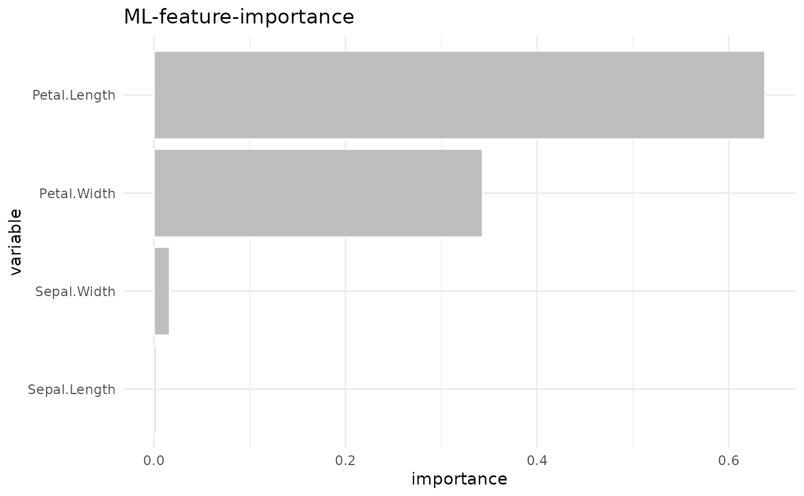

Based on the hyperparameters defined in the setup parameter, XGBoost hyperparameter-tuning is carried out using cross-validation. The best model is chosen and returned. As default, the function returns the feature-importance plot. To get the all outputs, use parameter out = "all"
Usage
explain_xgboost(
data,
target,
log = TRUE,
nthread = 1,
setup = list(cv_nfold = 2, max_nrounds = 1000, early_stopping_rounds = 50, grid_xgboost
= list(eta = c(0.3, 0.1, 0.01), max_depth = c(3, 5), gamma = 0, colsample_bytree =
0.8, subsample = 0.8, min_child_weight = 1, scale_pos_weight = 1)),
out = "plot"
)Arguments
- data
Data frame, must contain variable defined in target, but should not contain any customer-IDs or date/period columns
- target
Target variable (must be binary 0/1, FALSE/TRUE, no/yes)
- log
Log?
- nthread
Number of threads used for training
- setup
Setup of model
- out
Output of the function: "plot" | "model" | "importance" | all"
Examples
data <- use_data_iris()
data$is_versicolor <- ifelse(data$Species == "versicolor", 1, 0)
data$Species <- NULL
explain_xgboost(data, target = is_versicolor, log = FALSE)
